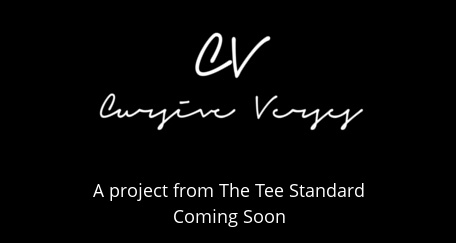

<!DOCTYPE html PUBLIC "-//W3C//DTD XHTML 1.0 Transitional//EN" "http://www.w3.org/TR/xhtml1/DTD/xhtml1-transitional.dtd">
<html>
  <head>
    <title>The Tee Standard</title>
    <meta charset='utf-8' />
    <meta content='width=device-width, initial-scale=1, maximum-scale=1' name='viewport' />
    <link href='assets/stylesheets/normalize.css' rel='stylesheet' type='text/css' />
    <link href='assets/stylesheets/text.css' rel='stylesheet' type='text/css' />
    <link href='assets/stylesheets/grater.css' rel='stylesheet' type='text/css' />
    <link href='assets/stylesheets/style.css' rel='stylesheet' type='text/css' />
    <script src='http://ajax.googleapis.com/ajax/libs/jquery/1.4/jquery.min.js' type='text/javascript'></script>
    <script src='assets/javascripts/jquery.localscroll-1.2.7-min.js' type='text/javascript'></script>
    <script src='assets/javascripts/jquery.scrollTo-1.4.3.1.js' type='text/javascript'></script>
    <script src='assets/javascripts/script.js' type='text/javascript'></script>
  </head>
</html>
<body>
  <a name='link1'></a>
  <div id='header'>
    <div class='grater-container'>
      
      <div id='nav'>
        <a class='home' href='#'>Home</a>
        <a class='about' href='#link2'>About</a>
        <a class='contact' href='#link3'>Contact</a>
      </div>
      
      <div class='herotext'>The Game tee shirt is a perennial classic.</div>
      <div class='herotext blue'>This year's design is almost here:</div>
      <div class='counter blue'>
        <div id='days'></div>
        <div id='hours'></div>
        <div id='minutes'></div>
      </div>
    </div>
  </div>
  <div id='about'>
    <div class='grater-container'>
      <a name='link2'>
        
      </a>
      <div class='icontext'>The Tee Standard was founded in 2010 by Florian Koenigsberger, Seth Thompson and Cristina Vere Nicoll.  All our work is motivated by our ultimate goal: setting and meeting a high standard of tee shirt design, production, and overall quality.</div>
    </div>
  </div>
  <div id='shirts'>
    <div class='grater-container'>
      <div class='grater'>
        <div class='showtee'>
          
          <h3 class='spring'>Spring Fling</h3>
          <p>Yale's annual Spring Fling concert is often abbreviated YSF.  The Tee Standard couldn't resist parodying the logo of high-fashion designer Yves Saint Laurent.</p>
        </div>
        <div class='showtee'>
          
          <h3 class='kids'>Kids Walk for Kids</h3>
          <p>Hearts of Gold, a New York-based charity foundation dedicated to helping homeless mothers and their children commissioned this tee shirt for their annual Kids Walk for Kids fundraiser.</p>
        </div>
      </div>
      <div class='grater'>
        <div class='showtee'>
          
          <h3 class='tailgate'>The Tailgate Tee</h3>
          <p>The Tee Standard created this tee shirt alongside its 2011 Yale / Harvard Game shirt to highlight Yale’s winning streak in the most important part of the Game: the tailgate.</p>
        </div>
        <div class='showtee'>
          
          <h3 class='sobs'>SOBs Tour Shirt</h3>
          <p>The Society of Orpheus and Bacchus, a Yale a capella group needed a shirt for their winter tour that captured a vintage showbill aesthetic.</p>
        </div>
      </div>
    </div>
  </div>
  <div id='contact'>
    <div class='grater-container'>
      <a name='link3'></a>
      <p>
        <a href='mailto:theteestandard@gmail.com'>theteestandard@gmail.com</a>
      </p>
      
    </div>
  </div>
</body>
